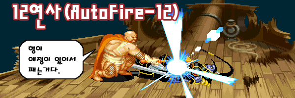
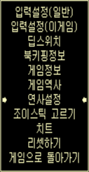
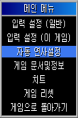

|  |
| |
일단 12연사를 알기전에 연사(autofire)에 대해 알아봅시다.
오락실 기기나 세턴용 게임에서는 존재하지 않고 에뮬레이터에서만 가능한 기능입니다.
버튼을 연타 할 필요 없이 버튼을 누르고만 있어도 연타와 같은 효과를 낼 수 있습니다.
게임 중 tab키를 누르면 나오는 메뉴중 '연사설정(MAMELON)', 혹은 '자동 연사설정(EK-MAME)'이
연사를 설정하는 메뉴 입니다.
|
| |

MAMELON의 메뉴 |
|

EK-MAME의 메뉴 |
|
|
MAMELON은 방향키, 각 버튼, A+B핫키(Hot Key)에 대해 연사를 설정 할 수 있는데,
버튼(A,B,C,D)만 설정할 수 있는 EK-MAME에 비해 좀 더 세세하게 설정 할 수 있습니다.
각 버튼마다 세가지 상태로 설정 할 수 있습니다.
켬(사용함, on) - 설정시 해당 버튼은 언제든지 연사상태가 됩니다.
끔(사용안함, off) - 기본적으로 이 설정으로 되어 있습니다. 연사상태를 해제합니다.
바꿈(토글, toggle) - 연사 토글 버튼으로 게임 중 켬/끔 상태를 전환 가능하도록 설정합니다.
메뉴의 가장 하단에 '간격(MAMELON의 경우)', 혹은 '연사속도(EK-MAME의 경우)'가 있습니다.
연사 간격(속도)을 설정하는 부분입니다. 아래에 설명할 '12연사'의 12도 바로 이 간격(속도)를 뜻합니다.
보통은 매끄러운 콤보를 위해 1로 설정하며 파이터의 경우 4~5로 설정하기도 합니다.
12연사를 이용한 다운 공격
일부 보스에게 연사 간격(속도)을 12로 설정해주면 무한대로 다운공격을 할 수 있습니다.
그러나 클래스에 따라 12연사가 가능한 보스가 차이가 있습니다.
| |
연사속도 |
텔'아린 / 텔'엘레논 |
오우거 |
만티코어 |
D.비스트 |
키메라 |
| 파이터/시프/엘프 |
12 |
불가 |
가능 |
불가 |
가능 |
불가 |
| 클레릭 |
12 |
가능 |
가능 |
가능 |
가능 |
가능 |
| 드워프 |
1 |
가능 |
가능 |
가능 |
가능 |
가능 |
파이터, 시프, 엘프의 경우 타점이 높기 때문에 오우거와 D.비스트에게만 사용가능 합니다.
드워프의 경우 공격속도가 느리기 때문에 연사 속도를 1로 맞춰 놓아야 되며
매직 유저는 워낙에 느려서 연사 속도 12를 못 따라가기 때문에 불가능합니다.
※ 주의점
12연사 시도시 다운되자 마자 바로 맞추는것이 아니라 처음 공격은 헛 나가야 됩니다.
즉, 다운되기 전부터 A를 누르고 있어서 한발 이상의 헛타가 나오고 두번째 공격 이후부터 명중시켜야 합니다.
1히트와 2히트 사이는 속도가 아직 1인 상태이고 2히트 이후부터 속도12가 적용되기 때문에
1히트가 성공하면 2히트가 들어가기 전에 적이 빠져나올 확률이 매우 높기 때문 입니다.
드워프의 경우는 그냥 바로 연사를 해도 됩니다.
▼ 예제 영상
|
|
| |
|
| |
|
|